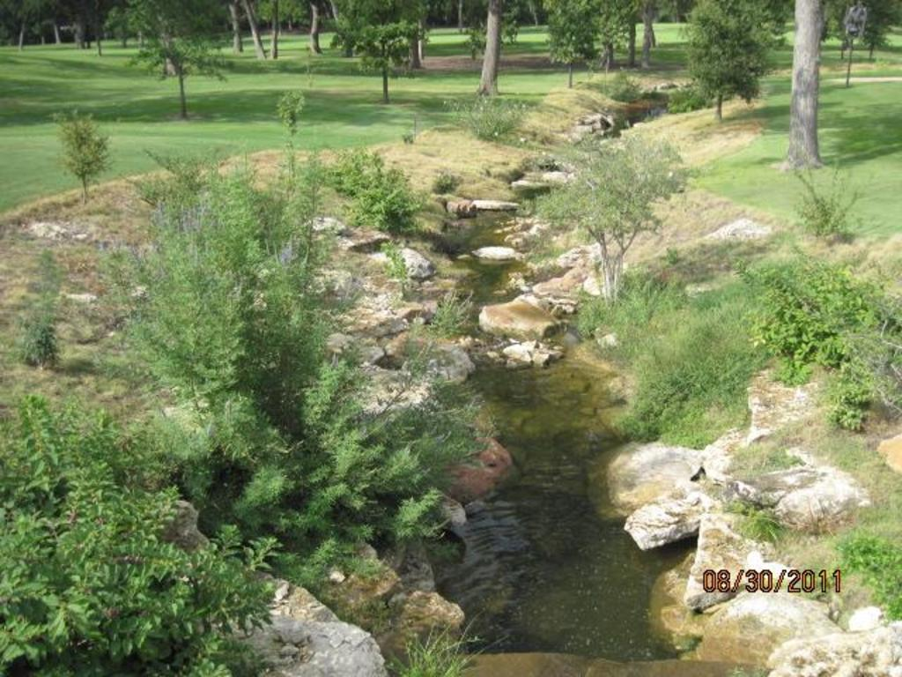
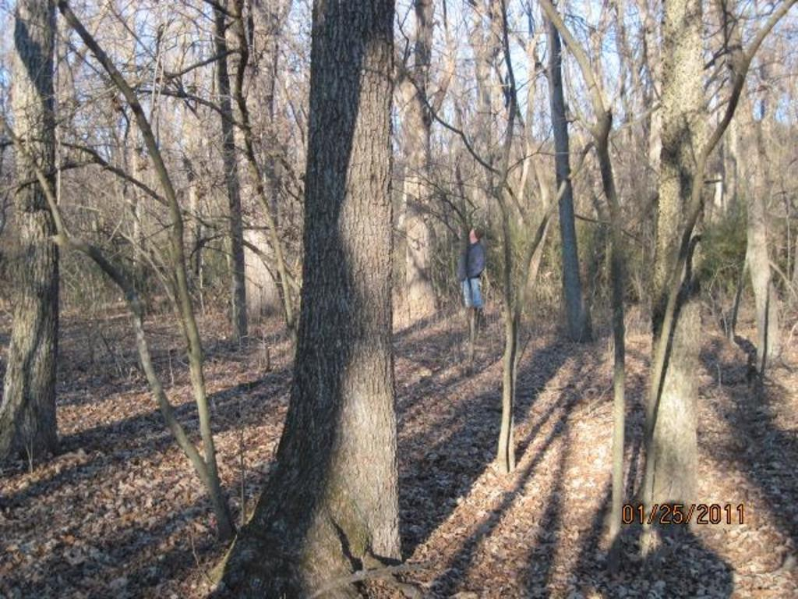
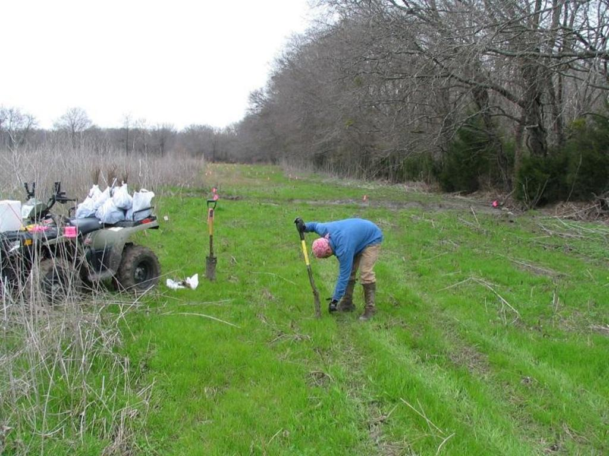
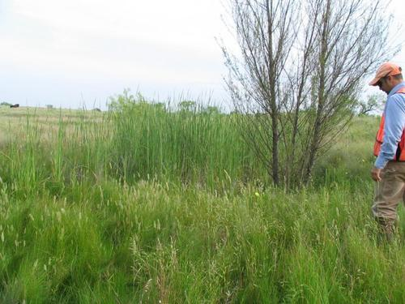

Wetlands consulting for Texas projects
Precise field work, clear Section 404 permitting, and lasting stewardship for private and public clients across North and East Texas.
Trusted wetland specialists since 2003.
Jones & Ridenour, Inc. delivers natural resource consulting for developers, municipalities, energy projects, and landowners — with a primary focus on North and East Texas.
Our biologists tailor field and office services to each project, maintain strong working relationships with regulators, and sequence tasks so assessments move cleanly from due diligence through compliance monitoring.

Core services
From rapid assessments to turn-key permitting and mitigation.
- Preliminary Wetland Determinations
- Waters of the U.S. Delineations
- Section 404 Permitting
- Wetlands Mitigation & Banking
- Creation, Enhancement & Restoration
- Endangered Species Investigations
- Environmental Assessments
- Tree Surveys & Biological Evaluations
- Expert Witness Testimony
“The work we have done together has led to not only accomplishing the objectives, but being praised by the regulatory agencies as doing work that sets an example for others to follow.”
Tripp Davis · American Society of Golf Course Architects
Fieldwork that stands up to review
Documentation from delineations, restoration, mitigation, and wildlife management across the region.



Consultants
Direct access to principals with decades of wetlands and natural resource experience.


Begin with a project conversation
Offices in Arlington and Denison, serving clients across Texas and the southern United States.